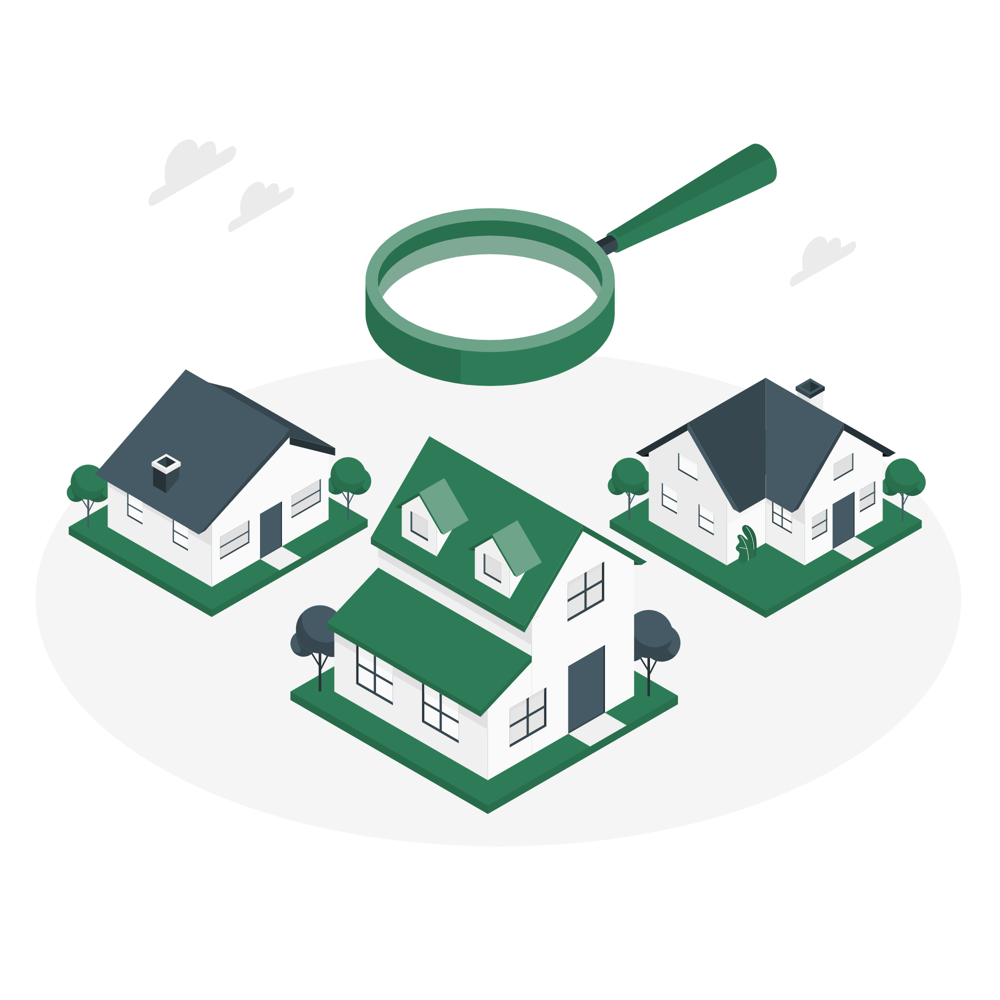

Comment l'association est administrée et comment participer à la vie collective.

[Texte générique à remplacer]
Réunions du comité, rencontres avec les délégués et assemblées générales.
L'assemblée générale est le moment où les propriétaires votent les décisions importantes de la copropriété : budget, travaux, entretien. Les convocations et comptes-rendus sont disponibles dans l'espace documents.
Consulter les documents →